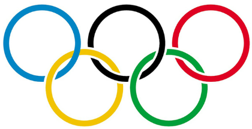

JOGOS OLÍMPICOS
Os Jogos Olímpicos são a única competição atlética verdadeiramente global,
multiesportiva e comemorativa do mundo.
Com mais de 200 países que
participam de mais de 400 eventos nos Jogos Olímpicos de Verão e de Inverno,
as Olimpíadas é onde o mundo compete, se sente inspirado e está unido.
ESPORTES
Modalidades de verão e inverno
Atletismo

O atletismo é um esporte que inclui uma série de eventos que envolvem corrida, salto, arremesso ou caminhada. Muitas vezes referido como track & field, o esporte inclui eventos individuais, como os 100m, maratona ou salto em distância, eventos combinados, incluindo o decatlo e o heptatlo, ou eventos por equipes, como os revezamentos 4x100m.
Ginástica Rítmica
A ginástica rítmica olímpica é um evento exclusivamente feminino que usa aparelhos para demonstrar habilidade, flexibilidade e musicalidade, e fez sua estreia olímpica em Los Angeles para os Jogos de 1984. Existem apenas duas categorias: feminino individual e feminino em grupo.
Biatlo
O biatlo é um esporte de inverno único que combina duas disciplinas muito diferentes: a resistência e a velocidade do esqui cross-country com a precisão e o controle do tiro com carabina. Os atletas percorrem circuitos cobertos de neve, parando em áreas de tiro designadas para acertar alvos. Errar um alvo resulta em penalidades, o que torna a precisão tão crucial quanto a velocidade.
Hóquei no gelo

O hóquei no gelo é um esporte coletivo dinâmico, fluido e emocionante, disputado por duas equipes de seis jogadores, cinco patinadores e um goleiro. A modalidade atrai grandes públicos nos Jogos Olímpicos devido à intensidade, ao ritmo acelerado e à imprevisibilidade das partidas.